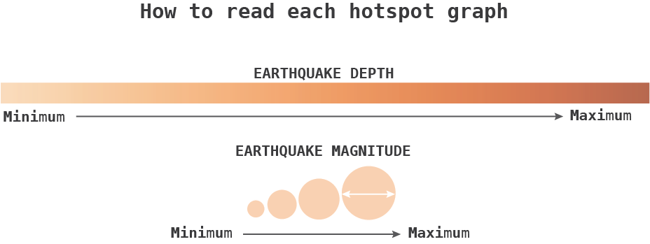

Earthquake Hotspotting
This visualization identifies urban earthquake hotspots using data from the US Geological Survey (USGS) on global seismic activity within the last 30 days. Cities with populations greater than 500,000 are filtered by the count of seismic events within a 50 km radius in the past month. Start by exploring an overview of the top ten earthquake hotspots on the left, or scroll to learn more about the earquakes near each city.
